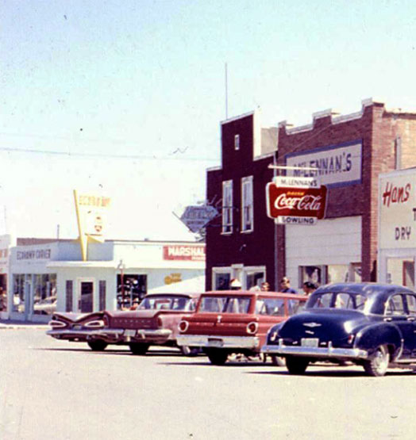

The people living in this secluded town are usually pretty kept to themselves. When you get to know some people around town, you will learn everyone is fairly laid back. The unofficial mayor of the October 2021 election, Jack Van Rijn, would probably represent most people here as well, as he had grown up in Coaldale for most, if not his whole life. He also shows how people around here never really change.

As for what he will do as mayor, no one knows aside from him. The best guess to that question would probably be that he was the most likely candidate to keep Coaldale the same. People around here also voted for a person like him because they know that he represents the majority living in Coaldale. The town council of Coaldale is also made up of long-time residents of the town, which will help ensure we can preserve the small-town charm everyone here loves so much!